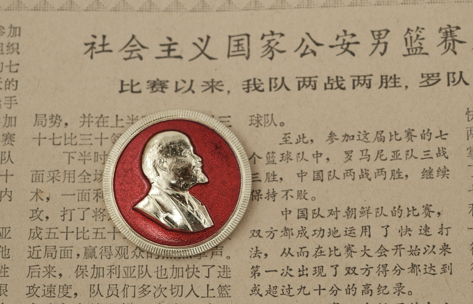

Exploring the influence of the Soviet Union on the development of China
"The salvoes of the October Revolution brought us Marxism-Leninism."--- Mao Zedong, "On the People's Democratic Dictatorship" (June, 1949)
Marxism-Leninism, while not "native" to China, found its way into the country primarily through the ripple effects of the October Revolution in 1917, which catalyzed the introduction of Marxist ideology during the Republic of China (ROC) Era. Also, the early years of the CPC were marked by significant guidance, directives, and influence from the Comintern, which operated from Moscow, infusing the party with doctrinal frameworks that were largely Soviet in origin. However, the impact of such Comintern influence is debated.
A membership card of the Soviet All-Union Central Council of Trade Unions (ACCTU).
A membership card of the All-China Federation of Trade Unions (ACFTU). The name of the institution delineates close inspiration from the Soviet ACCTU. The left page reads "Workers of all countries, unite!", further emblematic of the internationalist inspiration and stance of China. It is interesting to note that this membership card, however, was issued in 1979, after Mao's death.
Following the establishment of the People's Republic of China in 1949, Mao strategically aligned the nation's foreign policy with the Soviet Union and the Eastern Bloc. This alignment was not merely a matter of political expedience; it was also deeply rooted in ideological affinity. The Soviet Union's influence shaped various aspects of China's governance, including its economic construction and social policies. The early years of this partnership saw the Chinese economy adopting Soviet-style planning, heavy industry prioritization (such as with the Five-Year Plans), and collectivized agriculture, all of which aimed to transform China into a modern socialist state after the Soviet model. During the period of close Sino-Soviet collaboration, China fully embraced Soviet influence. Russian became the predominant foreign language taught in schools, which aimed at equipping students to communicate effectively with their Soviet counterparts.
Russo-Chinese Dictionary, Published 1952, Moscow. The Chinese editor Chen Changhao was once involved in the disastrous West Army during the Long March. After the establishment of the PRC, Chen worked as the Vice Director of the Compilation and Translation Bureau.
An excerpt from the Russo-Chinese Dictionary (mentioned above).
However, this cordial relationship began to unravel in the late 1950s and early 1960s, leading to the Sino-Soviet Split. Mao and the CPC increasingly perceived Khrushchev's policies as "revisionist" and accused the Soviet Union of embracing "socialist imperialism." This ideological rift prompted the Soviets to withdraw their support, leaving China to navigate its path of socialist construction for much of the 1960s and 1970s.
Despite the split, the legacy of Soviet ideological influence persisted in China. Mao's leadership sought to maintain a sense of revolutionary purity, distilling Marxist-Leninist thought free from what he considered the "revisionist" deviations of the Soviet leadership. The Cultural Revolution of the 1960s can be viewed as an attempt to safeguard this ideological purity. Thus, while the Sino-Soviet Split may have severed formal ties, it paradoxically fortified China's dedication to its interpretation of socialism, deeply shaping its political landscape for decades to come.
The Order and Medals of Bayi, Independence and Freedom, and Liberation were all closely modeled after the Soviet system, reflecting a significant influence on their design and structure. Notably, the pentagonal hanging for these medals almost exactly resembles those used by the Soviet Union, showcasing the aesthetic influence of the Soviet Union. This trend extended beyond China, as many other socialist and Eastern Bloc countries adopted similar systems and forms for their own medals and orders. This uniformity not only highlights the ideological alignment of the early P.R.C. to the Soviet Union but also underscores the cultural exchange that occurred among nations under Soviet direction.
Cap Badges of China and the Soviet Union. (Top) Soviet M69 Cap Badge. (Bottom Left) Chinese Type 87 Cap Badge. (Bottom Right) Chinese Type 07 Cap Badge. The yellow/gold and red color scheme is inherited from the Soviet Union and has withstood the test of time.
A side-by-side comparison of the (Left) Soviet Medal "For Battle Merit" and the (Right) Chinese Meritorious Service Medal (3rd Class). The pentagonal hanging system is inherited from the Soviet Union. However, in the newer versions of the Meritorious Service Medal, the pentagonal hanging is replaced with a rectangular hanging more akin to the British system.
A further demonstration of the aesthetical influence of the Soviet Union on the Chinese military orders. Left: [Soviet] Order of the Badge of Honor. Right: [Soviet] Medal "For the Defense of Moscow".
A Lenin Badge of the Mao Era, indicating the ideological genealogy of the Mao Era and its close affinity with orthodox Marxism-Leninism.
Furthermore, during this period, China, in conjunction with other socialist states, adopted a military rank system that was significantly influenced by the Soviet model. In the case of China, this can be best represented with the chart below (Image sources: Wikimedia Commons):